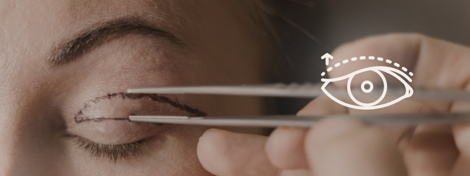

O que é?
A blefaroplastia, também conhecida como cirurgia plástica das pálpebras, é um procedimento cirúrgico que visa remover o excesso de pele, músculo e gordura das pálpebras superiores e/ou inferiores. O objetivo principal é melhorar a aparência estética da região dos olhos, reduzindo a flacidez e bolsas de gordura, além de corrigir problemas funcionais como a ptose (queda da pálpebra) que pode afetar a visão.
Quando é indicada?
A técnica é indicada para casos de:
➡️ Excesso de pele e/ou flacidez nas pálpebras que prejudica a visão;
➡️ Bolsa de gordura sob e/ou abaixo dos olhos;
➡️ Ptose palpebral (queda das pálpebras por causas musculares);
➡️ Pseudoptose palpebral (queda das pálpebras por excesso de pele);
➡️ Presença de xantelasmas;
➡️ Face com aspecto de cansaço;
➡️ Desejo de rejuvenescimento da região dos olhos.
Tipos de Blefaroplastia
Os tipos de blefaroplastia são classificados de acordo com a região a ser tratada, como:
Blefaroplastia superior
A blefaroplastia superior é o procedimento focado na remoção de tecido cutâneo e adiposo das pálpebras superiores. O objetivo dessa técnica é levantar o olhar, promovendo o rejuvenescimento facial, e ampliar o campo de visão comprometido pela sombra da pele excedente.
Blefaroplastia inferior
A blefaroplastia inferior também visa a eliminação de excessos de gordura e de pele com técnica similar, mas com aplicação nas pálpebras inferiores. O tratamento é destinado às bolsas que surgem abaixo dos olhos e criam uma imagem envelhecida.
Blefaroplastia completa
A blefaroplastia completa combina os dois tipos de blefaroplastia anteriores em uma mesma intervenção. Assim, o procedimento é realizado tanto na pálpebra superior quanto na pálpebra inferior para obter os benefícios estéticos e funcionais.
Blefaroplastia asiática
Técnica específica para pacientes de origem asiática que buscam criar uma "pálpebra dupla".
Corrige olheiras?
A blefaroplastia pode ajudar a melhorar a aparência das olheiras em alguns casos,
especialmente quando as olheiras são causadas pelo excesso de gordura ou flacidez
na pálpebra inferior.
No entanto, se as olheiras forem causadas por fatores como pigmentação da pele ou questões vasculares,
outros tratamentos podem ser necessários em conjunto, como laser ou preenchimento dérmico.
➡️ É importante consultar um médico especializado para avaliar a causa das olheiras e determinar o tratamento mais adequado.
Quanto tempo dura o efeito?
O efeito da blefaroplastia pode durar muitos anos, mas não é permanente.
Em média, os resultados podem ser visíveis por 10 a 15 anos, dependendo
de fatores como o envelhecimento natural da pele, a genética do paciente
e os cuidados pós-cirúrgicos.
Com o tempo, a flacidez e as bolsas de gordura podem voltar gradualmente, mas de forma
menos pronunciada do que antes da cirurgia. Para manter os resultados, é importante adotar
um estilo de vida saudável e seguir as orientações médicas para cuidados com a pele ao redor dos olhos.
Cuidados após a blefaroplastia
O pós-operatório pode incluir inchaço, hematomas e sensibilidade na região, mas tendem a diminuir com o tempo.
Após a blefaroplastia, é essencial seguir as orientações do médico, que incluem:
➡️ Uso de compressas frias para reduzir o inchaço;
➡️ Aplicação de pomadas específicas para auxiliar na cicatrização;
➡️ Evitar a exposição ao sol nas primeiras semanas;
➡️ Evitar coçar ou esfregar os olhos;
➡️ Não usar lentes de contato durante o período inicial de recuperação;
➡️ O acompanhamento médico pós-cirúrgico é recomendado para garantir que tudo esteja evoluindo bem.
Deixa cicatrizes visíveis?
As cicatrizes da blefaroplastia são geralmente discretas. Na blefaroplastia superior,
a incisão é feita nas dobras naturais das pálpebras, tornando-a quase invisível após a cicatrização.
Na blefaroplastia inferior, a incisão fica logo abaixo dos cílios ou, em alguns casos, dentro da pálpebra, o que
também a torna difícil de perceber. A habilidade do médico e os cuidados pós-operatórios são fundamentais para garantir
uma cicatrização eficaz.
Quanto tempo dura a recuperação?
A recuperação da blefaroplastia varia de paciente para paciente, mas, geralmente, leva de uma a duas semanas
para que o inchaço e os roxos diminuam significativamente. Após esse período, a maioria das pessoas já pode retomar suas atividades
normais, embora seja recomendado evitar esforço físico intenso por algumas semanas.
A recuperação total, com a cicatrização completa das incisões, pode levar de 4 a 6 semanas.
Quanto tempo depois posso voltar a trabalhar?
O tempo para voltar ao trabalho após a blefaroplastia pode variar de acordo
com o tipo de atividade profissional e a recuperação individual. Em geral,
a maioria das pessoas pode retornar ao trabalho após 7 a 10 dias, quando o
inchaço e os hematomas já estão mais controlados.
Se o trabalho envolver atividades físicas intensas ou exposição a condições
que possam prejudicar a recuperação (como luzes fortes ou ambientes poeirentos), é
recomendável esperar um pouco mais, geralmente de 2 a 3 semanas. É importante seguir
as orientações do médico para garantir uma recuperação segura e eficaz.
Quando posso tomar banho?
Após a blefaroplastia, é importante ter cuidado ao tomar banho para evitar irritação
ou complicações na área operada. Em geral, recomenda-se esperar pelo menos 48 horas
após a cirurgia antes de tomar banho completo. Durante esse período, você pode tomar banhos rápidos,
evitando molhar diretamente a área dos olhos.
Após 48 horas, você pode tomar banho normal, mas evite jatos fortes de água diretamente
sobre os olhos e não esfregue a área. É aconselhável usar sabonetes suaves e evitar produtos
irritantes. Sempre siga as orientações do seu médico para garantir uma recuperação segura.
Quando posso usar maquiagem?
Após a blefaroplastia, é importante ter cautela ao usar maquiagem para evitar irritação
ou infecção na área operada. Em geral, recomenda-se esperar pelo menos 10 a 14 dias
antes de aplicar maquiagem nos olhos. Isso permite que os pontos cicatrizem adequadamente e reduz o risco
de complicações.
Quando você começar a usar maquiagem novamente, opte por produtos suaves e hipoalergênicos,
evitando produtos à base de óleo ou aqueles que possam causar irritação. Sempre siga as orientações do seu médico
para garantir uma recuperação segura e eficaz.
Quando posso voltar a dirigir?
O tempo para voltar a dirigir após a blefaroplastia pode variar de pessoa para pessoa,
mas, em geral, recomenda-se esperar pelo menos 1 a 2 semanas após a cirurgia.
Isso permite que o inchaço e os hematomas diminuam, além de garantir que você tenha uma visão clara
e confortável para dirigir com segurança.
É importante estar atento aos sinais do seu corpo e consultar o seu médico antes de retomar
a direção. Se você sentir desconforto, visão turva ou dificuldade de concentração, é melhor esperar mais tempo
antes de voltar ao volante.
Como dormir após a blefaroplastia?
Após a blefaroplastia, é importante dormir de forma adequada para evitar complicações e favorecer a recuperação. Recomenda-se:
➡️ Dormir com a cabeça elevada: Utilize travesseiros extras para manter a cabeça elevada por pelo menos 7 a 10 dias.
Isso ajuda a reduzir o inchaço e melhora a circulação na área ao redor dos olhos.
➡️ Evitar dormir de barriga para baixo: Tente dormir de costas para evitar pressionar a área dos olhos. Dormir de lado ou de
barriga para baixo pode aumentar o risco de irritação ou deslocamento das pálpebras.
➡️ Evitar fricção nos olhos: É importante não esfregar ou pressionar os olhos durante o sono. Isso pode prejudicar a cicatrização
ou causar desconforto.
Benefícios
A blefaroplastia oferece uma série de benefícios estéticos e funcionais.
Entre os principais estão:
➡️ Redução da flacidez nas pálpebras;
➡️ Eliminação de bolsas de gordura;
➡️ Melhoria da simetria facial;
➡️ Olhar mais descansado e jovem;
➡️ Em casos de pálpebras superiores caídas, o procedimento também pode melhorar a visão periférica.
Cansado(a) do excesso de pele e das bolsas sob os olhos?
A Blefaroplastia é a solução para um olhar rejuvenescido e sem cirurgia invasiva.
Agende sua avaliação e descubra como ter um olhar mais jovem e radiante.
 Agende seu horário
Agende seu horário